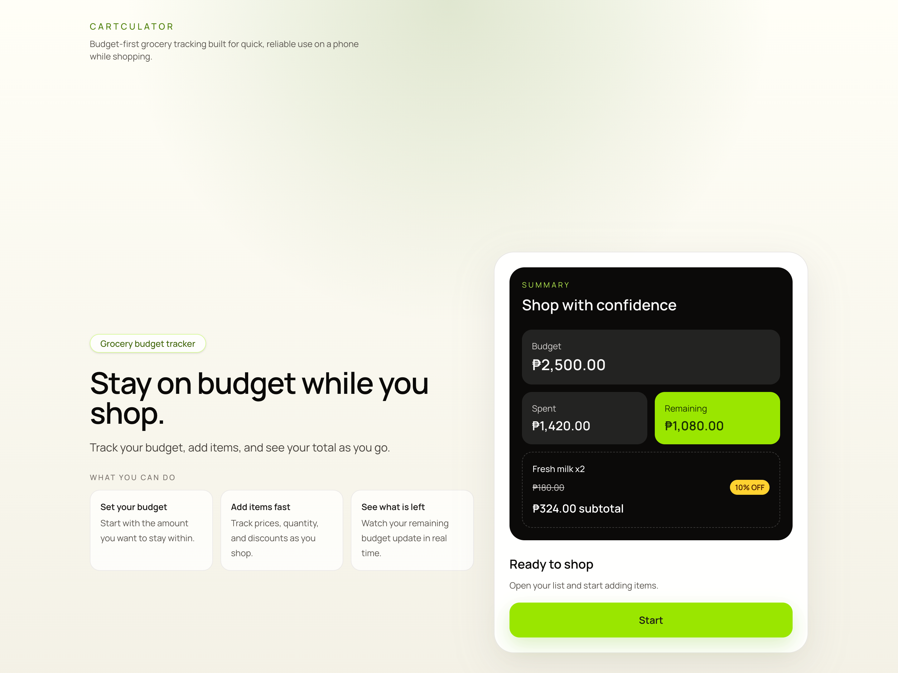

HTML
HTML
Web Developer
Ernie Jr Demaluan
I build clean, responsive web interfaces and practical digital solutions with a strong focus on clarity, usability, and execution. My creative production background helps me bring a sharp eye for detail, structure, and presentation into every project.
About
Practical web development shaped by a strong creative background.
I’m a web developer focused on building responsive interfaces, practical digital solutions, and real-world web projects. My approach combines clear problem-solving, steady technical growth, and strong execution.
Before focusing on web development, I built experience in creative and production work, which shaped how I think about layout, visual clarity, workflow, and presentation. That background helps me create digital products that are functional, intentional, and user-friendly.
Skills
Core technologies I use to build for the web.
Core Development
HTML
 CSS
CSS
 JavaScript
JavaScript
 Git
Git
Projects
Selected projects built with practical execution in mind.

p1-console-app
Our first project in the Uplift bootcamp, built as a console-based application to practice program flow, problem solving, and core JavaScript fundamentals.
JavaScript

Carculator
A simple calculator application built to practice core TypeScript logic, user input handling, and clear interface behavior.
TypeScript
Contact
Let’s connect and build something useful.
I’m open to opportunities, collaborations, and practical web projects. You can reach me through email or connect with me on my developer and professional profiles.